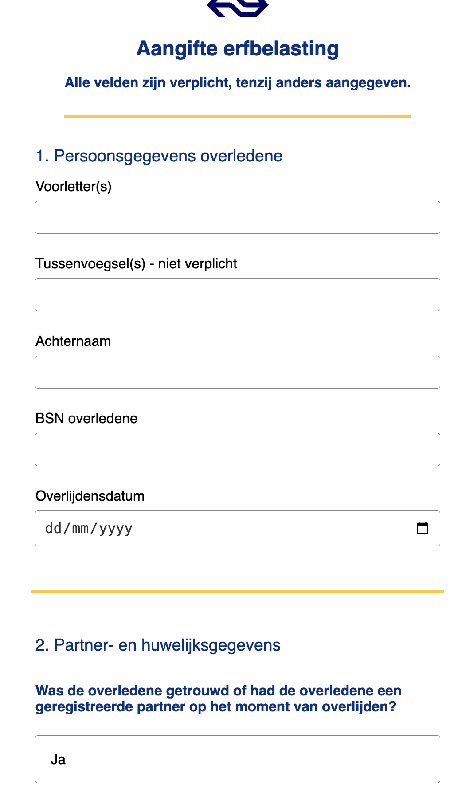

Browser
Technologies
Een robuust en toegankelijk formulier bouwen

// Uitkomst
Bij BT moesten we nadenken over hoe we een complex belastingformulier (in de stijl van NS) toegankelijk en gebruiksvriendelijk maken voor alle gebruikers op het web. Het formulier moest op zoveel mogelijk manieren en apparaten ingevuld kunnen worden. Bovendien moesten we met progressive enhancement werken, stap voor stap HTML —> CSS —> Javascript bouwen en moet het nog steeds werken zodra een deel wegvalt, Javascript of CSS.
Ik vond het met name aan het begin interessant om wat dieper in native HTML formulieren te duiken, ik was nog niet bekend met formulieren qua structuur. Zo heb ik geleerd hoe je de structuur correct kan opbouwen met fieldsets en legends en de inputs kan aanvullen met HTML-attributen zoals required, pattern en title.
Daarnaast heb ik met verschillende combinator selectoren, die ik niet vaak gebruik, progressive disclosure weten te maken voor het formulier. Denk aan > en +.
Al met al ben ik tevreden met het resultaat, een mooi en nog belangrijker, solide formulier qua toegankelijkheid en progressive enhancement. Het grootste verbeterpunt was de verkrijger functie, die had ik wat last moment gemaakt dus was hij niet helemaal compleet.
Bekijk het project >